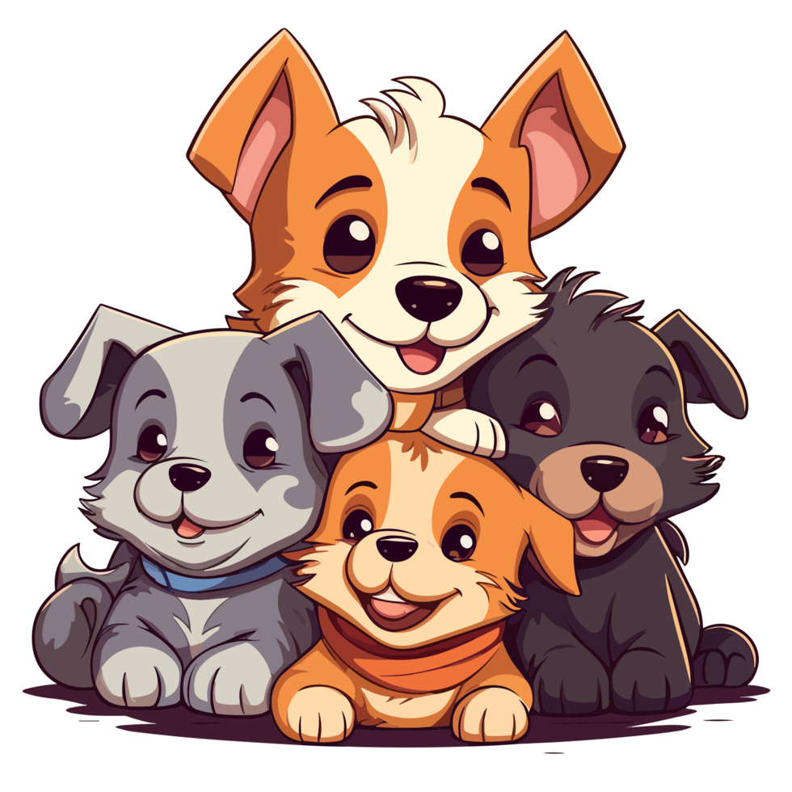
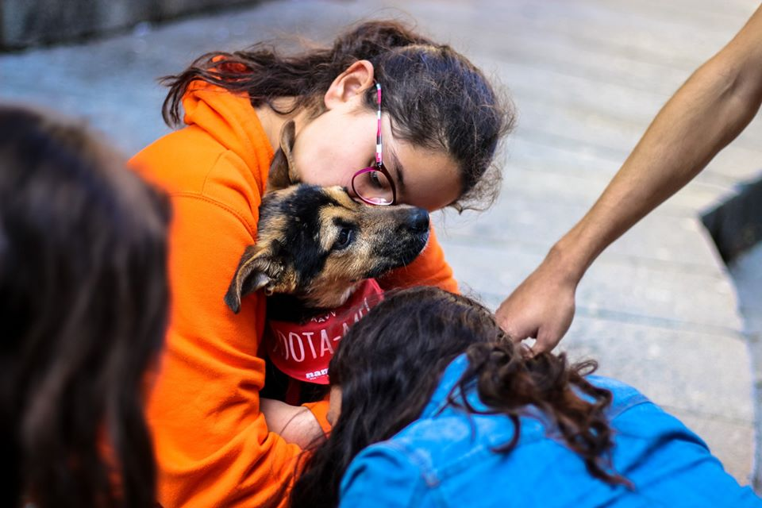
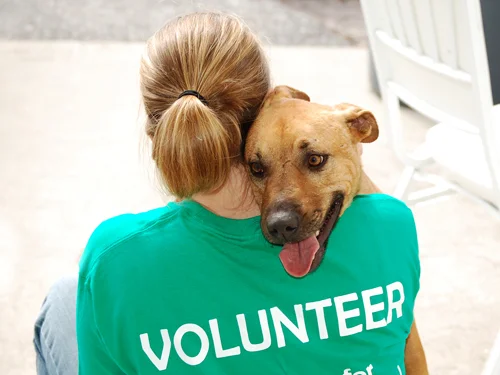

Conheça as organizações que ajudam animais todos os dias com amor, cuidado e proteção.
ONG dedicada ao resgate, tratamento e adoção de cães e gatos.

Projeto social focado em animais abandonados e vítimas de maus-tratos.

ONG parceira especializada em reabilitação e adoção responsável.
Localização:
Descrição: